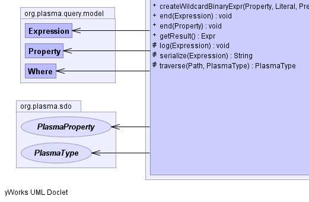
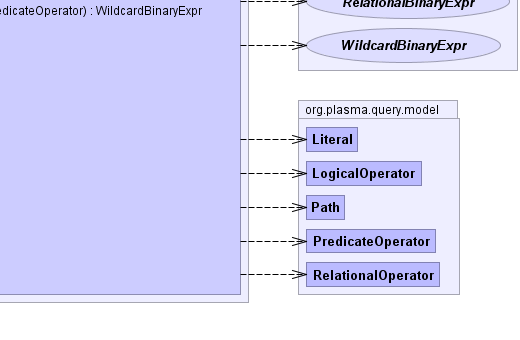

- java.lang.Object
-
- org.plasma.query.visitor.DefaultQueryVisitor
-
- org.cloudgraph.query.expr.ExpresionVisitorSupport
-
- org.cloudgraph.query.expr.DefaultBinaryExprTreeAssembler
-
- All Implemented Interfaces:
- ExprAssembler, org.plasma.query.visitor.QueryVisitor
- Direct Known Subclasses:
- ExternalEdgeRecognizerSyntaxTreeAssembler, GraphRecognizerSyntaxTreeAssembler, PathPredicateBinaryExprTreeAssembler, ScanRecognizerSyntaxTreeAssembler
public abstract class DefaultBinaryExprTreeAssembler extends ExpresionVisitorSupport implements ExprAssembler
A binary expression tree assembler which constructs an operator precedence map, thenvisits(traverses) the given predicate expression syntax tree depth-first using an adapted shunting-yard algorithm and assembles a resulting binary tree structure. In typical usage scenarios, a single expression tree is assembled once, and then used to evaluate any number of graph edge or other results based on a given context.The adapted shunting-yard algorithm in general uses a stack of operators and operands, and as new binary tree nodes are detected and created they are pushed onto the operand stack based on operator precedence. The resulting binary expression tree reflects the syntax of the underlying query expression including the precedence of its operators.
The use of binary expression tree evaluation for post processing of graph edge results is necessary in columnar data stores, as an entity with multiple properties is necessarily persisted across multiple columns. And while these data stores provide many useful column oriented filters, the capability to select an entity based on complex criteria which spans several columns is generally not supported, as such filters are column oriented. Yet even for simple queries (e.g. "where entity.c1 = 'foo' and entity.c2 = 'bar'") column c1 and its value exists in one cell and column c2 exists in another table cell. Since columnar data store filters cannot generally span columns, both cells must be returned and the results post processed within the context of the binary expression tree.
Subclasses may provide alternate implementations of
ExprAssemblerwhich create binary expression tree nodes with specific evaluation behavior.- Since:
- 0.5.2
- Author:
- Scott Cinnamond
- See Also:
Expr-


 
-
-
Field Summary
Fields Modifier and Type Field and Description protected org.plasma.query.model.ExpressioncontextExpressionprotected org.plasma.sdo.PlasmaPropertycontextPropertyprotected org.plasma.query.model.PropertycontextQueryPropertyprotected org.plasma.sdo.PlasmaTypecontextTypeprotected org.plasma.query.model.Wherepredicateprotected org.plasma.sdo.PlasmaTyperootType
-
Constructor Summary
Constructors Constructor and Description DefaultBinaryExprTreeAssembler(org.plasma.query.model.Where predicate, org.plasma.sdo.PlasmaType rootType)Constructs an assembler based on the given predicate and graph edge type.
-
Method Summary
Methods Modifier and Type Method and Description LogicalBinaryExprcreateLogicalBinaryExpr(Expr left, Expr right, org.plasma.query.model.LogicalOperator operator)Creates and returns a logical binary expression based on the given terms and logical operator.RelationalBinaryExprcreateRelationalBinaryExpr(org.plasma.query.model.Property property, org.plasma.query.model.Literal literal, org.plasma.query.model.RelationalOperator operator)Creates and returns a relational binary expression based on the given terms and relational operator.WildcardBinaryExprcreateWildcardBinaryExpr(org.plasma.query.model.Property property, org.plasma.query.model.Literal literal, org.plasma.query.model.PredicateOperator operator)Creates and returns a wildcard binary expression based on the given terms and wildcard operator.voidend(org.plasma.query.model.Expression expression)Process the traversal end event for a queryexpressionconsuming each term in theexpression.voidend(org.plasma.query.model.Property property)Process the traversal end event for a querypropertywithin anexpressionsetting up context information for the endpoint property and its type, as well as physical column qualifier name bytes which are set into thecontextQueryPropertyphysical name bytes. for the currentexpression.ExprgetResult()Returns the binary expression tree resultprotected voidlog(org.plasma.query.model.Expression expr)protected java.lang.Stringserialize(org.plasma.query.model.Expression expr)protected org.plasma.sdo.PlasmaTypetraverse(org.plasma.query.model.Path path, org.plasma.sdo.PlasmaType startType)-
Methods inherited from class org.cloudgraph.query.expr.ExpresionVisitorSupport
getChildExpressionCount, getChildExpressions, getLogicalOperatorCount, hasChildExpressions, hasWildcard
-
Methods inherited from class org.plasma.query.visitor.DefaultQueryVisitor
end, end, end, end, end, end, end, end, end, end, end, end, end, end, end, end, end, end, end, end, end, end, getContext, start, start, start, start, start, start, start, start, start, start, start, start, start, start, start, start, start, start, start, start, start, start, start, start
-
-
-
-
Field Detail
-
predicate
protected org.plasma.query.model.Where predicate
-
rootType
protected org.plasma.sdo.PlasmaType rootType
-
contextType
protected org.plasma.sdo.PlasmaType contextType
-
contextProperty
protected org.plasma.sdo.PlasmaProperty contextProperty
-
contextQueryProperty
protected org.plasma.query.model.Property contextQueryProperty
-
contextExpression
protected org.plasma.query.model.Expression contextExpression
-
-
Constructor Detail
-
DefaultBinaryExprTreeAssembler
public DefaultBinaryExprTreeAssembler(org.plasma.query.model.Where predicate, org.plasma.sdo.PlasmaType rootType)Constructs an assembler based on the given predicate and graph edge type.- Parameters:
predicate- the predicateedgeType- the graph edge type which is the type for the reference property within the graph which represents an edgerootType- the graph root type
-
-
Method Detail
-
getResult
public Expr getResult()
Returns the binary expression tree result- Returns:
- the binary expression tree result
-
end
public void end(org.plasma.query.model.Expression expression)
Process the traversal end event for a queryexpressionconsuming each term in theexpression.- Specified by:
endin interfaceorg.plasma.query.visitor.QueryVisitor- Overrides:
endin classorg.plasma.query.visitor.DefaultQueryVisitor- See Also:
DefaultQueryVisitor.end(org.plasma.query.model.Expression)
-
createRelationalBinaryExpr
public RelationalBinaryExpr createRelationalBinaryExpr(org.plasma.query.model.Property property, org.plasma.query.model.Literal literal, org.plasma.query.model.RelationalOperator operator)
Creates and returns a relational binary expression based on the given terms and relational operator.- Specified by:
createRelationalBinaryExprin interfaceExprAssembler- Parameters:
property- the property termliteral- the literal termoperator- the relational operator- Returns:
- a relational binary expression based on the given terms and relational operator.
-
createWildcardBinaryExpr
public WildcardBinaryExpr createWildcardBinaryExpr(org.plasma.query.model.Property property, org.plasma.query.model.Literal literal, org.plasma.query.model.PredicateOperator operator)
Creates and returns a wildcard binary expression based on the given terms and wildcard operator.- Specified by:
createWildcardBinaryExprin interfaceExprAssembler- Parameters:
property- the property termliteral- the literal termoperator- the wildcard operator- Returns:
- a wildcard binary expression based on the given terms and wildcard operator.
-
createLogicalBinaryExpr
public LogicalBinaryExpr createLogicalBinaryExpr(Expr left, Expr right, org.plasma.query.model.LogicalOperator operator)
Creates and returns a logical binary expression based on the given terms and logical operator.- Specified by:
createLogicalBinaryExprin interfaceExprAssembler- Parameters:
property- the property termliteral- the literal termoperator- the logical operator- Returns:
- a wildcard binary expression based on the given terms and logical operator.
-
end
public void end(org.plasma.query.model.Property property)
Process the traversal end event for a querypropertywithin anexpressionsetting up context information for the endpoint property and its type, as well as physical column qualifier name bytes which are set into thecontextQueryPropertyphysical name bytes. for the currentexpression.- Specified by:
endin interfaceorg.plasma.query.visitor.QueryVisitor- Overrides:
endin classorg.plasma.query.visitor.DefaultQueryVisitor- See Also:
DefaultQueryVisitor.end(org.plasma.query.model.Property)
-
traverse
protected org.plasma.sdo.PlasmaType traverse(org.plasma.query.model.Path path, org.plasma.sdo.PlasmaType startType)
-
log
protected void log(org.plasma.query.model.Expression expr)
-
serialize
protected java.lang.String serialize(org.plasma.query.model.Expression expr)
-
-